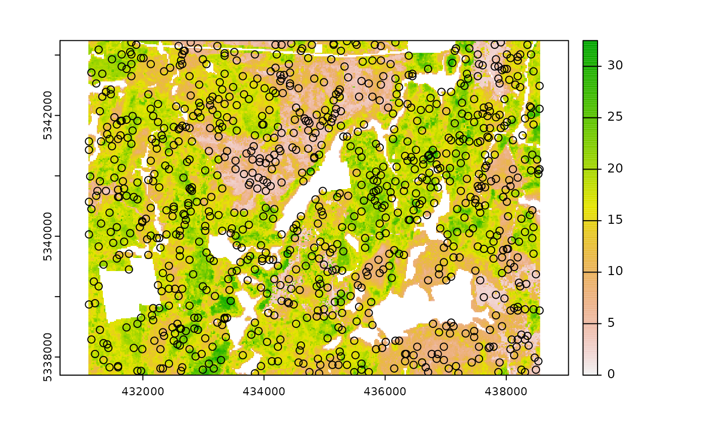

Currently, there are 8 functions associated with the sample verb in the sgsR package:
sample_srs()- simple random samplingsample_systematic()- systematic sampling in a grid or hexagon tessellationsample_strat()- stratified sampling within asrastersample_nc()- Nearest centroid sampling. See Melville & Stone (2016)sample_clhs()- Latin hypercube samplingsample_ahels()- adapted hypercube evaluation of a legacy sample (ahels)sample_existing()- Sub-sample within an existing sample using clhs
Access
One key feature of using some sample_* functions is its ability to define access corridors. Users can supply a road access network (must be sf line objects) and define buffers around access where samples should be excluded and included.
Relevant and applicable parameters when access is defined are:
buff_inner- Can be left asNULL(default). Inner buffer parameter that defines the distance fromaccesswhere samples cannot be taken (i.e. if you don’t want samples within 50 m of youraccesslayer setbuff_inner = 50).buff_outer- Outer buffer parameter that defines the maximum distance that the samples can be located fromaccess(i.e. if you don’t want samples more than 200 meters from youraccesslayer setbuff_inner = 200).
sample_srs
We have demonstrated a simple example of using the sample_srs() function in vignette("sgsR"). We will demonstrate additional examples below.
The input required for sample_srs() is a raster. This means that sraster and mraster are supported for this function.
#--- perform simple random sampling ---#
sample_srs(raster = sraster, # input sraster
nSamp = 200, # number of desired samples
plot = TRUE) # plot
#> Simple feature collection with 200 features and 0 fields
#> Geometry type: POINT
#> Dimension: XY
#> Bounding box: xmin: 431130 ymin: 5337730 xmax: 438550 ymax: 5343230
#> CRS: +proj=utm +zone=17 +ellps=GRS80 +towgs84=0,0,0,0,0,0,0 +units=m +no_defs
#> First 10 features:
#> geometry
#> 1 POINT (437610 5342790)
#> 2 POINT (437610 5342790)
#> 3 POINT (436430 5338090)
#> 4 POINT (431130 5342210)
#> 5 POINT (435530 5338650)
#> 6 POINT (434190 5341670)
#> 7 POINT (435490 5341290)
#> 8 POINT (438530 5342750)
#> 9 POINT (434310 5339430)
#> 10 POINT (434410 5339590)
sample_srs(raster = mraster, # input mraster
nSamp = 200, # number of desired samples
access = access, # define access road network
mindist = 200, # minimum distance samples must be apart from one another
buff_inner = 50, # inner buffer - no samples within this distance from road
buff_outer = 200, # outer buffer - no samples further than this distance from road
plot = TRUE) # plot
#> Simple feature collection with 200 features and 0 fields
#> Geometry type: POINT
#> Dimension: XY
#> Bounding box: xmin: 431170 ymin: 5337750 xmax: 438530 ymax: 5343230
#> CRS: +proj=utm +zone=17 +ellps=GRS80 +towgs84=0,0,0,0,0,0,0 +units=m +no_defs
#> First 10 features:
#> geometry
#> 1 POINT (434530 5339250)
#> 2 POINT (438310 5339090)
#> 3 POINT (437970 5339910)
#> 4 POINT (434970 5339490)
#> 5 POINT (434450 5341390)
#> 6 POINT (431950 5337830)
#> 7 POINT (438310 5341150)
#> 8 POINT (436350 5340310)
#> 9 POINT (433590 5341970)
#> 10 POINT (437010 5341570)
sample_systematic
The sample_systematic() function applies systematic sampling across an area with the cellsize parameter defining the resolution of the tessellation. The tessellation shape can be modified using the square parameter. Assigning TRUE (default) to the square parameter results in a regular grid and assigning FALSE results in a hexagonal grid. The location of samples can also be adjusted using the locations parameter, where centers takes the center, corners takes all corners, and random takes a random location within each tessellation.
#--- perform grid sampling ---#
sample_systematic(raster = sraster, # input sraster
cellsize = 1000, # grid distance
plot = TRUE) # plot
#> Simple feature collection with 35 features and 0 fields
#> Geometry type: POINT
#> Dimension: XY
#> Bounding box: xmin: 431166 ymin: 5337866 xmax: 438428.3 ymax: 5343076
#> CRS: +proj=utm +zone=17 +ellps=GRS80 +towgs84=0,0,0,0,0,0,0 +units=m +no_defs
#> First 10 features:
#> geometry
#> 1 POINT (438171 5338035)
#> 2 POINT (435009.8 5337951)
#> 3 POINT (437829.7 5338975)
#> 4 POINT (431848.7 5337866)
#> 5 POINT (432788.6 5338208)
#> 6 POINT (434668.5 5338890)
#> 7 POINT (435608.4 5339232)
#> 8 POINT (436548.4 5339573)
#> 9 POINT (437488.3 5339914)
#> 10 POINT (438428.3 5340256)
#--- perform grid sampling ---#
sample_systematic(raster = sraster, # input sraster
cellsize = 500, # grid distance
square = FALSE, # hexagonal tessellation
location = "random", # random sample within tessellation
plot = TRUE) # plot
#> Simple feature collection with 178 features and 0 fields
#> Geometry type: POINT
#> Dimension: XY
#> Bounding box: xmin: 431106 ymin: 5337722 xmax: 438542.4 ymax: 5343170
#> CRS: +proj=utm +zone=17 +ellps=GRS80 +towgs84=0,0,0,0,0,0,0 +units=m +no_defs
#> First 10 features:
#> geometry
#> 1 POINT (438337.3 5338002)
#> 2 POINT (438322.3 5338522)
#> 3 POINT (438542.4 5340721)
#> 4 POINT (438534.2 5339737)
#> 5 POINT (438340.4 5339026)
#> 6 POINT (437827.1 5337914)
#> 7 POINT (438307.7 5340290)
#> 8 POINT (438085.4 5339256)
#> 9 POINT (437784 5338701)
#> 10 POINT (438446.7 5341663)
sample_systematic(raster = sraster, # input sraster
cellsize = 500, # grid distance
access = access, # define access road network
buff_outer = 200, # outer buffer - no samples further than this distance from road
square = FALSE, # hexagonal tessellation
location = "corners", # take corners instead of centers
plot = TRUE)
#> Simple feature collection with 622 features and 0 fields
#> Geometry type: POINT
#> Dimension: XY
#> Bounding box: xmin: 431108.3 ymin: 5337844 xmax: 438550.7 ymax: 5343232
#> CRS: +proj=utm +zone=17 +ellps=GRS80 +towgs84=0,0,0,0,0,0,0 +units=m +no_defs
#> First 10 features:
#> geometry
#> 1 POINT (437909.5 5343050)
#> 2 POINT (437662.7 5343199)
#> 3 POINT (437662.7 5343199)
#> 4 POINT (437409.6 5343060)
#> 5 POINT (437162.8 5343210)
#> 6 POINT (437909.5 5343050)
#> 7 POINT (437903.3 5342761)
#> 8 POINT (437909.5 5343050)
#> 9 POINT (437162.8 5343210)
#> 10 POINT (437409.6 5343060)
sample_strat
The sample_strat() contains two methods to perform sampling:
"Queinnec"- Hierarchical sampling using a focal window to isolate contiguous groups of stratum pixels, which was originally developed by Martin Queinnec."random"- Traditional stratified random sampling. Thismethodignores much of the functionality of the algorithm to allow users the capability to use standard stratified random sampling approaches without the use of a focal window to locate contiguous stratum cells.
method = "Queinnec"
Queinnec, M., White, J. C., & Coops, N. C. (2021). Comparing airborne and spaceborne photon-counting LiDAR canopy structural estimates across different boreal forest types. Remote Sensing of Environment, 262(August 2020), 112510.
This algorithm uses moving window (wrow and wcol parameters) to filter the input sraster to prioritize sample locations where stratum pixels are spatially grouped, rather than dispersed individuals across the landscape.
Sampling is performed using 2 rules:
Rule 1 - Sample within spatially grouped stratum pixels. Moving window defined by
wrowandwcol.Rule 2 - If no more samples exist to satisfy desired sampling count, individual stratum pixels are sampled.
The rule applied to a select a particular sample is defined in the rule attribute of output samples. We give a few examples below:
#--- perform stratified sampling random sampling ---#
sample_strat(sraster = sraster, # input sraster
nSamp = 200, # desired sample number
plot = TRUE) # plot
#> Simple feature collection with 200 features and 3 fields
#> Geometry type: POINT
#> Dimension: XY
#> Bounding box: xmin: 431130 ymin: 5337710 xmax: 438530 ymax: 5343210
#> CRS: NA
#> First 10 features:
#> strata type rule geometry
#> x 1 new rule1 POINT (437010 5338550)
#> x1 1 new rule2 POINT (438390 5339510)
#> x2 1 new rule2 POINT (435150 5339070)
#> x3 1 new rule2 POINT (437790 5339030)
#> x4 1 new rule2 POINT (433590 5341010)
#> x5 1 new rule2 POINT (431290 5340630)
#> x6 1 new rule2 POINT (434250 5339070)
#> x7 1 new rule2 POINT (436230 5342930)
#> x8 1 new rule2 POINT (436390 5339790)
#> x9 1 new rule2 POINT (437990 5339030)In some cases, users might want to include existing samples within the algorithm. In order to adjust the total number of samples needed per stratum to reflect those already present in existing, we can use the intermediate function extract_strata().
This function uses the sraster and existing samples and extracts the stratum for each. These samples can be included within sample_strat(), which adjusts total samples required per class based on representation in existing.
#--- extract strata values to existing samples ---#
e.sr <- extract_strata(sraster = sraster, # input sraster
existing = existing) # existing samples to add strata value toNotice that e.sr now has an attribute named strata. If that parameter is not there, sample_strat() will give an error.
sample_strat(sraster = sraster, # input sraster
nSamp = 200, # desired sample number
access = access, # define access road network
existing = e.sr, # existing samples with strata values
mindist = 200, # minimum distance samples must be apart from one another
buff_inner = 50, # inner buffer - no samples within this distance from road
buff_outer = 200, # outer buffer - no samples further than this distance from road
plot = TRUE) # plot
#> Simple feature collection with 400 features and 3 fields
#> Geometry type: POINT
#> Dimension: XY
#> Bounding box: xmin: 431130 ymin: 5337710 xmax: 438550 ymax: 5343230
#> CRS: NA
#> First 10 features:
#> strata type rule geometry
#> 1 1 existing existing POINT (431210 5340750)
#> 2 1 existing existing POINT (437870 5339750)
#> 3 1 existing existing POINT (437970 5342930)
#> 4 1 existing existing POINT (436230 5338010)
#> 5 1 existing existing POINT (438250 5339230)
#> 6 1 existing existing POINT (438370 5338090)
#> 7 1 existing existing POINT (438110 5339690)
#> 8 1 existing existing POINT (437910 5338910)
#> 9 1 existing existing POINT (437830 5342850)
#> 10 1 existing existing POINT (436230 5342910)As seen on the code in the example above, the defined mindist parameter specifies the minimum euclidean distance that samples must be apart from one another.
Notice that the sample outputs have type and rule attributes which outline whether the samples are existing or new and whether rule1 or rule2 were used to select the individual samples. If type is existing (a user provided existing sample), rule will be existing as well as seen above.
sample_strat(sraster = sraster, # input
nSamp = 200, # desired sample number
access = access, # define access road network
existing = e.sr, # existing samples with strata values
include = TRUE, # include existing plots in nSamp total
buff_outer = 200, # outer buffer - no samples further than this distance from road
plot = TRUE) # plot#> Simple feature collection with 200 features and 3 fields
#> Geometry type: POINT
#> Dimension: XY
#> Bounding box: xmin: 431130 ymin: 5337770 xmax: 438470 ymax: 5343190
#> CRS: NA
#> First 10 features:
#> strata type rule geometry
#> 1 1 existing existing POINT (431210 5340750)
#> 2 1 existing existing POINT (437870 5339750)
#> 3 1 existing existing POINT (437970 5342930)
#> 4 1 existing existing POINT (436230 5338010)
#> 5 1 existing existing POINT (438250 5339230)
#> 6 1 existing existing POINT (438370 5338090)
#> 7 1 existing existing POINT (438110 5339690)
#> 8 1 existing existing POINT (437910 5338910)
#> 9 1 existing existing POINT (437830 5342850)
#> 10 1 existing existing POINT (436230 5342910)The include parameter determines whether existing samples should be included in the total count of samples defined by nSamp. By default, the include parameter is set as FALSE.
method = "random
Stratified random sampling with equal probability for all cells (using default algorithm values for mindist and no use of access functionality). In essence this method perform the sample_srs algorithm for each stratum separately to meet the specified sample allocation.
#--- perform stratified sampling random sampling ---#
sample_strat(sraster = sraster, # input sraster
method = "random", #stratified random sampling
nSamp = 200, # desired sample number
plot = TRUE) # plot
#> Simple feature collection with 200 features and 1 field
#> Geometry type: POINT
#> Dimension: XY
#> Bounding box: xmin: 431130 ymin: 5337730 xmax: 438550 ymax: 5343230
#> Projected CRS: UTM Zone 17, Northern Hemisphere
#> First 10 features:
#> strata geometry
#> 1 1 POINT (438290 5338250)
#> 2 1 POINT (438290 5338250)
#> 3 1 POINT (435890 5343190)
#> 4 1 POINT (436010 5342150)
#> 5 1 POINT (434750 5341290)
#> 6 1 POINT (436090 5338150)
#> 7 1 POINT (434430 5340870)
#> 8 1 POINT (434550 5342390)
#> 9 1 POINT (436010 5339770)
#> 10 1 POINT (434290 5341030)
sample_nc
sample_nc() function implements the Nearest Centroid sampling algorithm described in Melville & Stone (2016). The algorithm uses kmeans clustering where the number of clusters (centroids) is equal to the desired number of samples (nSamp). Cluster centers are located, which then prompts the nearest neighbour mraster pixel for each cluster to be located (assuming default k parameter). These nearest neighbours are the output samples. Basic usage is as follows:
#--- perform simple random sampling ---#
sample_nc(mraster = mraster, # input
nSamp = 25, # desired sample number
plot = TRUE)
#> K-means being performed on 3 layers with 25 centers.
#> Simple feature collection with 25 features and 4 fields
#> Geometry type: POINT
#> Dimension: XY
#> Bounding box: xmin: 431190 ymin: 5337910 xmax: 438530 ymax: 5342970
#> CRS: +proj=utm +zone=17 +ellps=GRS80 +towgs84=0,0,0,0,0,0,0 +units=m +no_defs
#> First 10 features:
#> zq90 pzabove2 zsd kcenter geometry
#> 23677 5.99 58.9 1.38 1 POINT (434650 5341970)
#> 66634 8.75 40.3 2.30 2 POINT (435890 5339670)
#> 5336 12.50 74.2 3.19 3 POINT (433370 5342950)
#> 49010 4.55 30.7 1.02 4 POINT (434030 5340610)
#> 99324 23.50 89.9 6.85 5 POINT (433210 5337910)
#> 37247 17.60 72.4 4.86 6 POINT (437490 5341250)
#> 60688 21.70 91.8 5.62 7 POINT (436330 5339990)
#> 63615 19.50 20.9 6.20 8 POINT (435190 5339830)
#> 4907 12.10 51.2 3.34 9 POINT (432250 5342970)
#> 69750 11.70 89.8 2.67 10 POINT (438530 5339510)Altering the k parameter leads to a multiplicative increase in output samples where total output samples = \(`nSamp` * `k`\).
#--- perform simple random sampling ---#
samples <- sample_nc(mraster = mraster, # input
k = 2, # number of nearest neighbours to take for each kmeans center
nSamp = 25, # desired sample number
plot = TRUE)
#> K-means being performed on 3 layers with 25 centers.
#--- total samples = nSamp * k (25 * 2) = 50 ---#
nrow(samples)
#> [1] 50Visualizing what the kmeans centers and samples nearest neighbours looks like is possible when using details = TRUE. The $kplot output provides a quick visualization of where the centers are based on a scatter plot of the first 2 layers in mraster. Notice that the centers are well distributed in covariate space and chosen samples are the closest pixels to each center (nearest neighbours).
#--- perform simple random sampling with details ---#
details <- sample_nc(mraster = mraster, # input
nSamp = 25, # desired sample number
details = TRUE)
#> K-means being performed on 3 layers with 25 centers.
#--- plot ggplot output ---#
details$kplot
sample_clhs
sample_clhs() function implements conditioned Latin hypercube (clhs) sampling methodology from the clhs package. A number of other functions in the sgsR package help to provide guidance on clhs sampling including calculate_pop() and calculate_lhsOpt(). Check out these functions to better understand how sample numbers could be optimized.
The syntax for this function is similar to others shown above, although parameters like iter, which define the number of iterations within the Metropolis-Hastings process are important to consider. In these examples we use a low iter value because it takes less time to run. Default values for iter within the clhs package are 10,000.
sample_clhs(mraster = mraster, # input
nSamp = 200, # desired sample number
plot = TRUE, # plot
iter = 100) # number of iterations
sample_clhs(mraster = mraster, # input
nSamp = 300, # desired sample number
iter = 100, # number of iterations
existing = existing, # existing samples
access = access, # define access road network
buff_inner = 100, # inner buffer - no samples within this distance from road
buff_outer = 300, # outer buffer - no samples further than this distance from road
plot = TRUE) # plot
The cost parameter defines the mraster covariate, which is used to constrain the clhs sampling. This could be any number of variables. An example could be the distance a pixel is from road access (e.g. from calculate_distance() see example below), terrain slope, the output from calculate_coobs(), or many others.
#--- cost constrained examples ---#
#--- calculate distance to access layer for each pixel in mr ---#
mr.c <- calculate_distance(raster = mraster, # input
access = access,
plot = TRUE) # define access road network
sample_clhs(mraster = mr.c, # input
nSamp = 250, # desired sample number
iter = 100, # number of iterations
cost = "dist2access", # cost parameter - name defined in calculate_distance()
plot = TRUE) # plot
sample_balanced
The sample_balanced() algorithm performs a balanced sampling methodology from the stratifyR / SamplingBigData packages.
sample_balanced(mraster = mraster, # input
nSamp = 200, # desired sample number
plot = TRUE) # plot
#> Simple feature collection with 200 features and 0 fields
#> Geometry type: POINT
#> Dimension: XY
#> Bounding box: xmin: 431210 ymin: 5337770 xmax: 438550 ymax: 5343230
#> CRS: +proj=utm +zone=17 +ellps=GRS80 +towgs84=0,0,0,0,0,0,0 +units=m +no_defs
#> First 10 features:
#> geometry
#> 1 POINT (437810 5343230)
#> 2 POINT (432110 5343210)
#> 3 POINT (433350 5343210)
#> 4 POINT (433590 5343210)
#> 5 POINT (431970 5343150)
#> 6 POINT (436230 5343090)
#> 7 POINT (435230 5343030)
#> 8 POINT (437650 5343010)
#> 9 POINT (433150 5342970)
#> 10 POINT (432610 5342930)
sample_balanced(mraster = mraster, # input
nSamp = 100, # desired sample number
algorithm = "lcube", # algorithm type
access = access, # define access road network
buff_inner = 50, # inner buffer - no samples within this distance from road
buff_outer = 200) # outer buffer - no samples further than this distance from road
#> Simple feature collection with 100 features and 0 fields
#> Geometry type: POINT
#> Dimension: XY
#> Bounding box: xmin: 431170 ymin: 5337750 xmax: 438390 ymax: 5343210
#> CRS: +proj=utm +zone=17 +ellps=GRS80 +towgs84=0,0,0,0,0,0,0 +units=m +no_defs
#> First 10 features:
#> geometry
#> 1 POINT (433870 5337770)
#> 2 POINT (435010 5339290)
#> 3 POINT (435470 5340410)
#> 4 POINT (437830 5342350)
#> 5 POINT (434990 5339750)
#> 6 POINT (435610 5337790)
#> 7 POINT (438150 5339990)
#> 8 POINT (434670 5343090)
#> 9 POINT (435770 5343210)
#> 10 POINT (433690 5340530)
sample_ahels
The sample_ahels() function performs the adapted Hypercube Evaluation of a Legacy Sample (ahels) algorithm usingexisting sample data and an mraster. New samples are allocated based on quantile ratios between the existing sample and mraster covariate dataset.
This algorithm was adapted from that presented in the paper below, which we highly recommend.
Malone BP, Minansy B, Brungard C. 2019. Some methods to improve the utility of conditioned Latin hypercube sampling. PeerJ 7:e6451 DOI 10.7717/peerj.6451
This algorithm:
Determines the quantile distributions of
existingsamples andmrastercovariates.Determines quantiles where there is a disparity between samples and covariates.
Prioritizes sampling within those quantile to improve representation.
To use this function, user must first specify the number of quantiles (nQuant) followed by either the nSamp (total number of desired samples to be added) or the threshold (sampling ratio vs. covariate coverage ratio for quantiles - default is 0.9) parameters. We recommended you setting the threshold values at or below 0.9.
sample_ahels(mraster = mraster,
existing = existing, # existing samples
plot = TRUE) # plot
#> Simple feature collection with 250 features and 7 fields
#> Geometry type: POINT
#> Dimension: XY
#> Bounding box: xmin: 431130 ymin: 5337750 xmax: 438470 ymax: 5343190
#> CRS: +proj=utm +zone=17 +ellps=GRS80 +towgs84=0,0,0,0,0,0,0 +units=m +no_defs
#> First 10 features:
#> type.x zq90 pzabove2 zsd strata type.y rule
#> 1 existing 6.92 61.2 1.62 1 new rule1
#> 2 existing 7.52 63.5 1.93 1 new rule2
#> 3 existing 10.50 17.6 2.76 1 new rule2
#> 4 existing 8.54 87.5 2.02 1 new rule2
#> 5 existing 2.96 20.7 0.49 1 new rule2
#> 6 existing 10.40 21.5 3.16 1 new rule2
#> 7 existing 8.81 75.7 2.04 1 new rule2
#> 8 existing 4.80 6.9 1.05 1 new rule2
#> 9 existing 5.69 7.9 1.35 1 new rule2
#> 10 existing 5.18 58.0 1.17 1 new rule2
#> geometry
#> 1 POINT (431210 5340750)
#> 2 POINT (437870 5339750)
#> 3 POINT (437970 5342930)
#> 4 POINT (436230 5338010)
#> 5 POINT (438250 5339230)
#> 6 POINT (438370 5338090)
#> 7 POINT (438110 5339690)
#> 8 POINT (437910 5338910)
#> 9 POINT (437830 5342850)
#> 10 POINT (436230 5342910)Notice that no threshold, nSamp, or nQuant were defined. That is because the default setting for threshold = 0.9 and nQuant = 10.
The first matrix output shows the quantile ratios between the sample and the covariates. A value of 1.0 indicates that samples are represented relative to the quantile coverage. Values > 1.0 indicate over representation of samples, while < 1.0 indicate under representation of samples.
sample_ahels(mraster = mraster,
existing = existing, # existing samples
nQuant = 20, # define 20 quantiles
nSamp = 300) # total samples desired#> Simple feature collection with 500 features and 7 fields
#> Geometry type: POINT
#> Dimension: XY
#> Bounding box: xmin: 431110 ymin: 5337730 xmax: 438550 ymax: 5343210
#> CRS: +proj=utm +zone=17 +ellps=GRS80 +towgs84=0,0,0,0,0,0,0 +units=m +no_defs
#> First 10 features:
#> type.x zq90 pzabove2 zsd strata type.y rule
#> 1 existing 6.92 61.2 1.62 1 new rule1
#> 2 existing 7.52 63.5 1.93 1 new rule2
#> 3 existing 10.50 17.6 2.76 1 new rule2
#> 4 existing 8.54 87.5 2.02 1 new rule2
#> 5 existing 2.96 20.7 0.49 1 new rule2
#> 6 existing 10.40 21.5 3.16 1 new rule2
#> 7 existing 8.81 75.7 2.04 1 new rule2
#> 8 existing 4.80 6.9 1.05 1 new rule2
#> 9 existing 5.69 7.9 1.35 1 new rule2
#> 10 existing 5.18 58.0 1.17 1 new rule2
#> geometry
#> 1 POINT (431210 5340750)
#> 2 POINT (437870 5339750)
#> 3 POINT (437970 5342930)
#> 4 POINT (436230 5338010)
#> 5 POINT (438250 5339230)
#> 6 POINT (438370 5338090)
#> 7 POINT (438110 5339690)
#> 8 POINT (437910 5338910)
#> 9 POINT (437830 5342850)
#> 10 POINT (436230 5342910)Notice that the total number of samples is 500. This value is the sum of existing samples (200) and number of samples defined by nSamp = 300.
sample_existing
Acknowledging that existing sample networks exist is important. There is significant investment into these samples, and in order to keep inventories up-to-date, we often need to collect new data at these locations. The sample_existing algorithm provides a method for sub-sampling an existing sample network should the financial / logistical resources not be available to collect data at all sample units. The algorithm leverages latin hypercube sampling using the clhs package to effectively sample within an existing network.
The algorithm has two fundamental approaches:
Sample exclusively using the sample network and the attributes it contains
Should
rasterinformation be available and co-located with the sample, use these data as population values to improve sub-sampling ofexisting.
Much like the sample_clhs() algorithm, users can define a cost parameter, which will be used to constrain sub-sampling. A cost parameters is a user defined metric/attribute such as distance from roads (e.g. calculate_distance()), elevation, etc.
Here some some basic examples:
Basic sub-sampling of existing
First we can create an existing dataset for our example. Lets imagine we have a systematically sampled dataset of ~900 samples, and we know we only have resources to sample 300 of them. We have some ALS data available (mraster), which we will use as our distributions to sample within.
#--- generate existing samples and extract metrics ---#
existing <- sample_systematic(raster = mraster, cellsize = 200, plot = TRUE) %>%
extract_metrics(mraster = mraster, existing = .)
We see our systematic sample. Notice that we used extract_metrics() after creating it. If the user provides a raster for the algorithm this isn’t neccesary, it will be handled internally in the algorithm if no attributes are present, but if only samples are given, attributes must be provided and sampling will be conducted on all included attributes. Now lets sub-sample within it.
#--- sub sample using ---#
sample_existing(existing = existing, # our existing sample
nSamp = 300, # the number of samples we want
plot = TRUE) # plot
#> Simple feature collection with 300 features and 3 fields
#> Geometry type: POINT
#> Dimension: XY
#> Bounding box: xmin: 431111.2 ymin: 5337702 xmax: 438554.1 ymax: 5343231
#> CRS: +proj=utm +zone=17 +ellps=GRS80 +towgs84=0,0,0,0,0,0,0 +units=m +no_defs
#> First 10 features:
#> zq90 pzabove2 zsd geometry
#> 203 18.30 72.7 4.46 POINT (432179.2 5341837)
#> 264 3.63 16.9 0.74 POINT (434211.9 5341670)
#> 513 11.40 88.9 3.18 POINT (432585.3 5340072)
#> 335 5.18 37.7 1.23 POINT (433662 5341204)
#> 764 20.20 90.7 5.47 POINT (431975.1 5338391)
#> 745 2.20 1.4 0.28 POINT (437736.4 5339059)
#> 685 9.41 82.0 2.32 POINT (436498.3 5339318)
#> 620 8.71 90.9 2.16 POINT (436650.9 5339739)
#> 663 2.46 1.3 0.37 POINT (434289.9 5339263)
#> 106 4.58 58.4 0.93 POINT (437497.1 5342857)We see from the output that we get 300 samples that are a sub-sample of the original existing sample. The plotted output shows sumulative frequency distributions of the population (all existing samples) and the sub-sample (the 300 samples we requested). Notice that the distributions match quite well. This is a simple example, so lets do another with a bit more complexity.
Sub-sampling using raster distributions
Our systematic sample of ~900 plots is fairly comprehensive, however we can generate a true population distribution through the inclusion of the ALS metrics in the sampling process. The metrics will be included in internal latin hypercube sampling to help guide sub-sampling of existing.
#--- sub sample using ---#
sample_existing(existing = existing, # our existing sample
nSamp = 300, # the number of samples we want
raster = mraster, # include mraster metrics to guide sampling of existing
plot = TRUE) # plot

#> Simple feature collection with 300 features and 3 fields
#> Geometry type: POINT
#> Dimension: XY
#> Bounding box: xmin: 431180.4 ymin: 5337720 xmax: 438531.1 ymax: 5343237
#> CRS: +proj=utm +zone=17 +ellps=GRS80 +towgs84=0,0,0,0,0,0,0 +units=m +no_defs
#> First 10 features:
#> zq90 pzabove2 zsd geometry
#> 53252 22.00 92.4 6.65 POINT (435588.4 5340219)
#> 293 16.60 90.3 4.74 POINT (435625.7 5341633)
#> 22724 3.92 26.0 0.78 POINT (434784.9 5341938)
#> 1410 21.70 74.6 6.29 POINT (432040.9 5343029)
#> 648 11.50 87.7 2.91 POINT (437468.6 5339632)
#> 83210 10.50 93.0 2.33 POINT (437010.9 5338371)
#> 74525 2.20 1.4 0.28 POINT (437736.4 5339059)
#> 713100 6.91 8.5 1.95 POINT (437713.4 5339258)
#> 14512 25.10 98.7 6.19 POINT (437321.5 5342635)
#> 4279 19.50 94.0 4.47 POINT (436313.9 5340908)The sample distribution again mimics the population distribution quite well! Now lets try using a cost variable to constrain the sub-sample.
#--- create distance from roads metric ---#
dist <- calculate_distance(raster = mraster, access = access)
#--- sub sample using ---#
sample_existing(existing = existing, # our existing sample
nSamp = 300, # the number of samples we want
raster = dist, # include mraster metrics to guide sampling of existing
cost = 4, # either provide the index (band number) or the name of the cost layer
plot = TRUE) # plot

#> Simple feature collection with 300 features and 4 fields
#> Geometry type: POINT
#> Dimension: XY
#> Bounding box: xmin: 431116.7 ymin: 5337766 xmax: 438536.5 ymax: 5343231
#> CRS: +proj=utm +zone=17 +ellps=GRS80 +towgs84=0,0,0,0,0,0,0 +units=m +no_defs
#> First 10 features:
#> zq90 pzabove2 zsd dist2access geometry
#> 48037 14.40 67.3 4.07 26.98519 POINT (432164.9 5340225)
#> 31910 15.10 89.8 3.60 34.70238 POINT (437039.4 5341596)
#> 48410 18.20 95.4 4.69 469.26982 POINT (431370.3 5340133)
#> 44936 15.60 97.6 3.46 288.59428 POINT (431347.2 5340331)
#> 3662 9.26 48.5 2.52 178.84204 POINT (434281.1 5341074)
#> 35763 18.90 85.4 3.92 128.84143 POINT (436466.4 5341328)
#> 481100 13.90 92.9 2.99 126.93068 POINT (431966.3 5340202)
#> 63086 8.26 28.6 2.89 31.33706 POINT (434465.5 5339485)
#> 61386 13.10 46.4 4.09 13.28359 POINT (438041.5 5339900)
#> 14512 25.10 98.7 6.19 170.25346 POINT (437321.5 5342635)Finally, should the user wish to further constrain the sample based on access like other sampling approaches in sgsR that is also possible.
#--- ensure access and existing are in the same CRS ---#
sf::st_crs(existing) <- sf::st_crs(access)
#--- sub sample using ---#
sample_existing(existing = existing, # our existing sample
nSamp = 300, # the number of samples we want
raster = dist, # include mraster metrics to guide sampling of existing
cost = 4, # either provide the index (band number) or the name of the cost layer
access = access, # roads layer
buff_inner = 50, # inner buffer - no samples within this distance from road
buff_outer = 300, # outer buffer - no samples further than this distance from road
plot = TRUE) # plot

#> Simple feature collection with 300 features and 4 fields
#> Geometry type: POINT
#> Dimension: XY
#> Bounding box: xmin: 431102.4 ymin: 5337720 xmax: 438545.3 ymax: 5343237
#> Projected CRS: UTM_Zone_17_Northern_Hemisphere
#> First 10 features:
#> zq90 pzabove2 zsd dist2access geometry
#> 1167 12.80 86.7 3.16 149.78663 POINT (436175.6 5342100)
#> 2317 3.59 36.7 0.72 53.64725 POINT (435861.6 5343070)
#> 2427 9.80 92.6 2.47 105.59593 POINT (435343.6 5340594)
#> 35632 16.20 63.9 4.90 67.59922 POINT (435925.3 5339050)
#> 135100 17.60 95.6 3.73 97.69974 POINT (437390.6 5342039)
#> 1310 16.40 73.0 4.83 64.22738 POINT (433057.2 5342946)
#> 791 25.10 98.7 6.19 170.25346 POINT (437321.5 5342635)
#> 1758 7.35 17.3 1.87 156.17054 POINT (433264.7 5341158)
#> 5050 17.50 85.9 3.51 185.60300 POINT (433302 5342571)
#> 2054 3.09 7.3 0.57 57.31368 POINT (433906.8 5340830)The greater constraints we add to the samples, the less likely we will have strong correlations between the population and sample, so its always important to understand these limitations and plan accordingly.